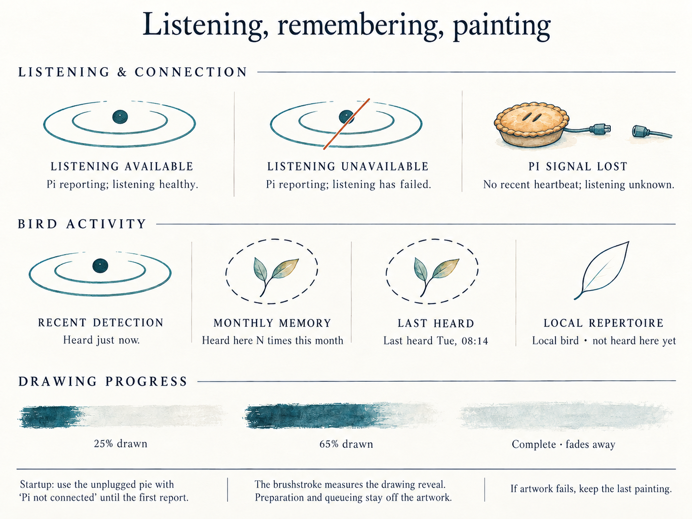
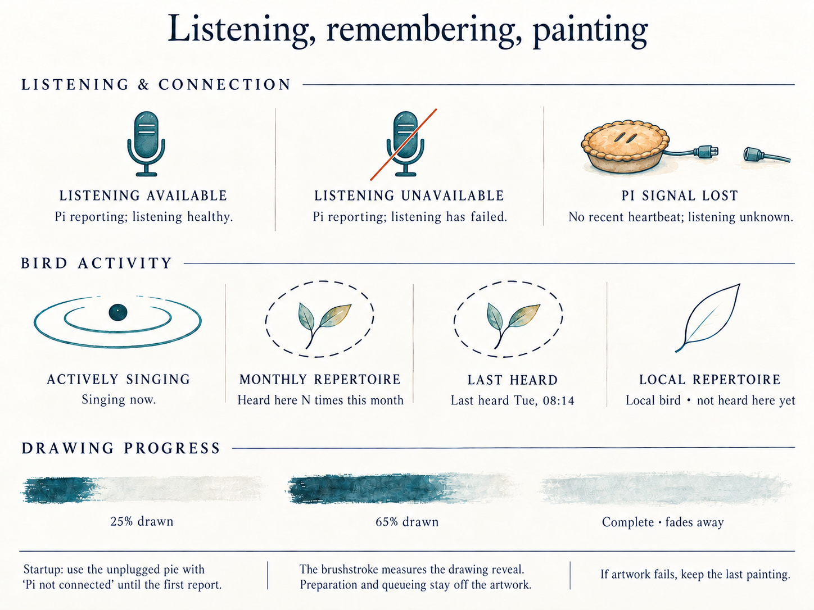
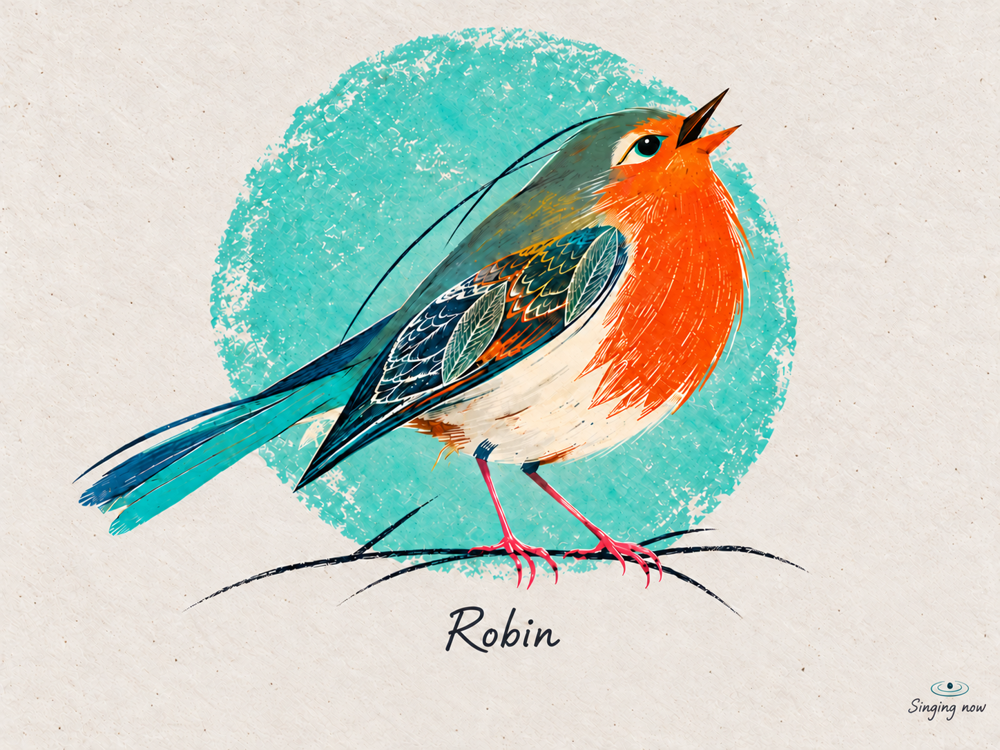
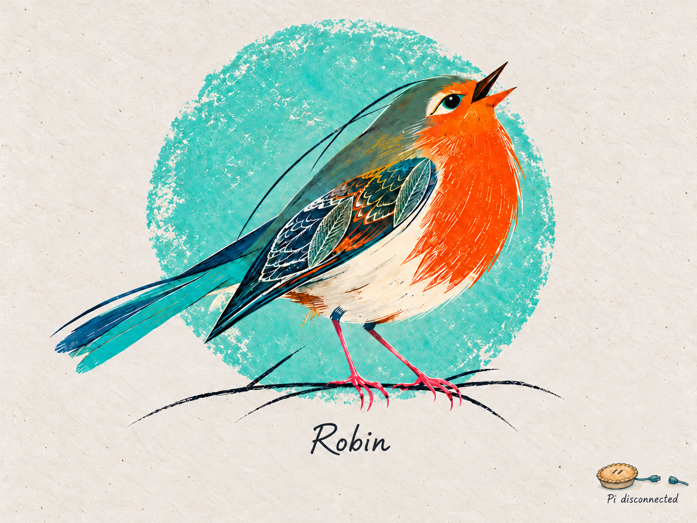

The original circular perspective ripple and unplugged pie, kept with the project. These examples are design references, not current garden readings.
State meanings and integration notes · Reusable existing symbol sprite



